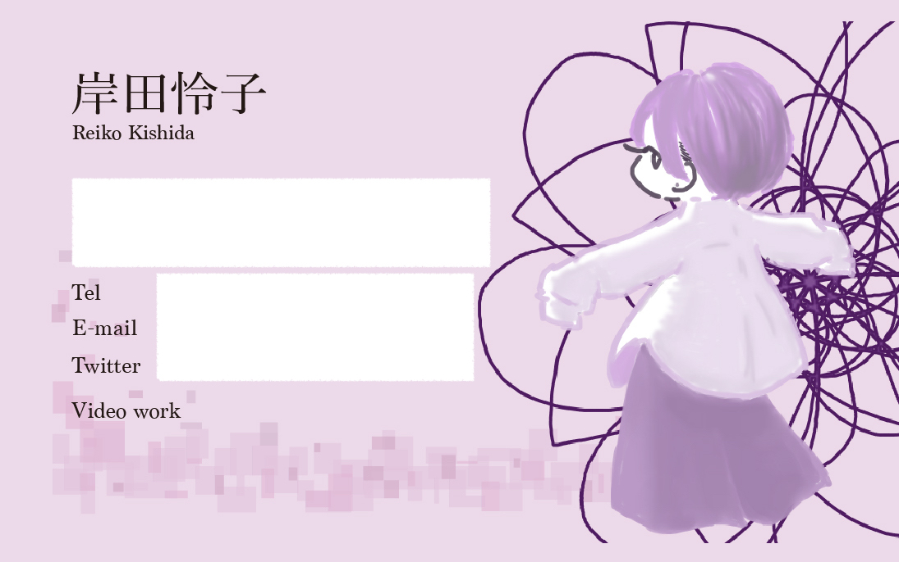
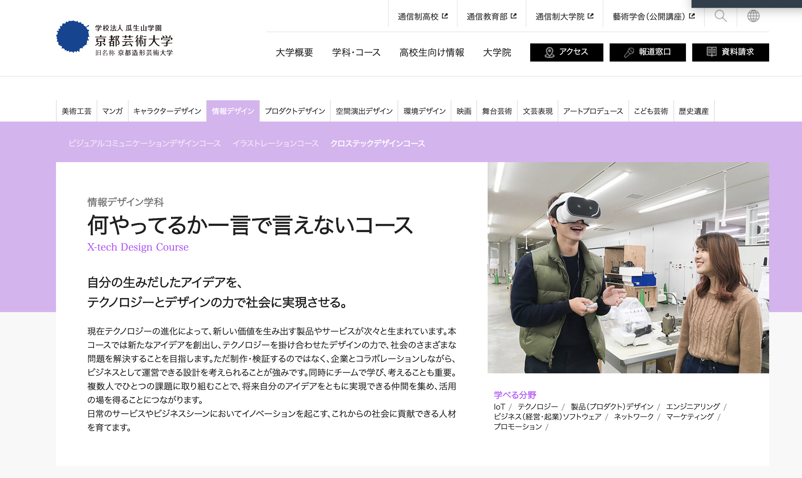
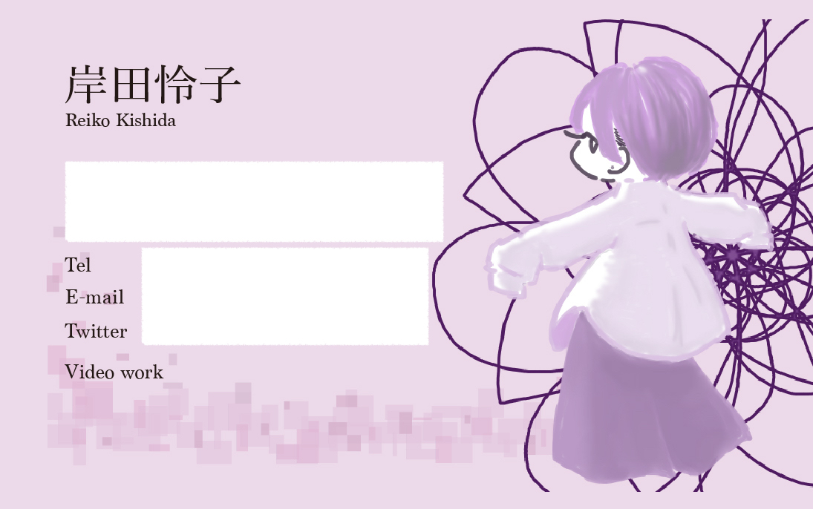
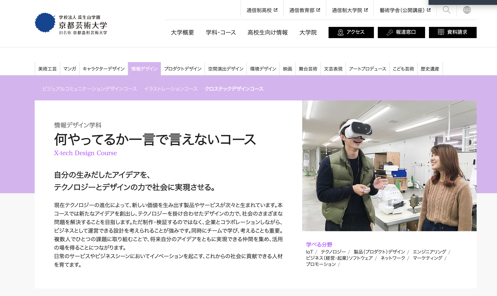

メディアリテラシー基礎
Session:1
名刺作り
前に作ったものを元に作ってみたが、今見返すと凝りすぎてるなぁ…と感じる。 もっとシンプルに作り直したい。

Session:2
イラレを使ってみる
イラレのペンツールに慣れる
- 直線と曲線を描く
- 「永」をペンツールでなぞる


Session:3
ウェブページに触れる
Google Chromeのディベロッパーツールを使って、既存のウェブサイトをいじってみる

前に作ったものを元に作ってみたが、今見返すと凝りすぎてるなぁ…と感じる。 もっとシンプルに作り直したい。

イラレのペンツールに慣れる
Google Chromeのディベロッパーツールを使って、既存のウェブサイトをいじってみる
